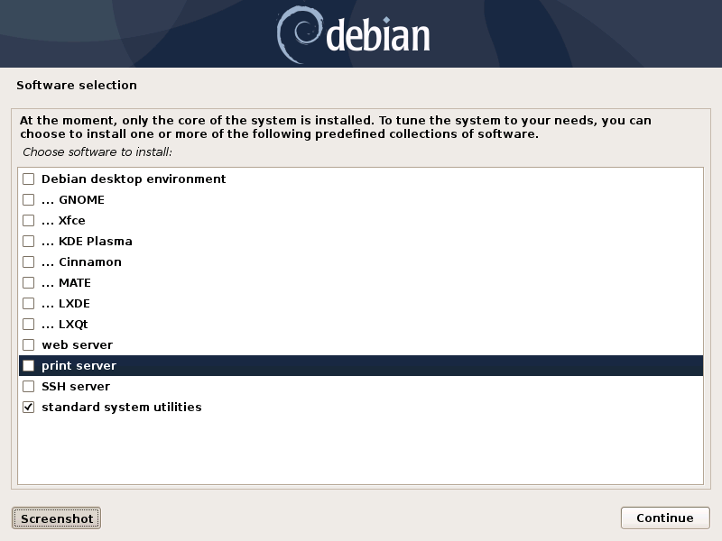

Debian base installation¶
Introduction¶
These are my notes about the installation of a Debian GNU/Linux system on a 64-bit (“AMD64” architecture) PC. A significant part of these notes describes the preparation of the installation medias. The assumption is made that you have access to a working machine with a Debian GNU/Linux system installed and a fast enough internet connection (to download a few hundreds of megabytes). This machine will be used to prepare the installation medias for the new system.
Most of the software packages are also downloaded during the installation, so the target machine should also have a fast enough internet connection.
The easiest way nowadays is probably to make a bootable USB stick. I used to make a “netinst” CD, but Debian “netinst” images have become bigger and they don’t fit on a 700MB CD-ROM anymore.
Making a bootable USB stick¶
Just download the tiny (64MB) “netboot” image (mini.iso) and write it (as
root) to the device corresponding to your USB stick (e.g. /dev/sdc, check
using lsblk):
wget https://deb.debian.org/debian/dists/testing/main/installer-amd64/current/images/netboot/mini.iso
cp mini.iso /dev/sdc; # As root.
sync; # As root.
Getting an installation CD¶
If you choose to go the CD-ROM route, here is what you need to do. The provided
URLs are for Debian 13.0.0 (Trixie). Note also that it is assumed that you have
cdrskin installed. Run
apt-get install cdrskin as root if not. Note also that the
dev=<cd_burning_drive_device_file> option is probably not mandatory as
cdrskin can detect CD burning devices (cdrskin --devices lists the detected
devices):
wget https://cdimage.debian.org/debian-cd/current/amd64/iso-cd/debian-13.0.0-amd64-netinst.iso
cdrskin dev=<cd_burning_drive_device_file> -eject -v -data debian-13.0.0-amd64-netinst.iso
You might want to verify the authenticity of the ISO image. Download the SHA512 checksum and associated signature file:
wget https://cdimage.debian.org/debian-cd/current/amd64/iso-cd/SHA512SUMS
wget https://cdimage.debian.org/debian-cd/current/amd64/iso-cd/SHA512SUMS.sign
Then, attempt to verify the authenticity of the image:
gpg --verify SHA512SUMS.sign
If there are lines like the following in the output, it means that you have
never imported the key used to sign the image (and this is confirmed by the
fact that it does not appear in the output of gpg --list-keys).
You can import the key with:
gpg --keyserver keyring.debian.org --recv DF9B9C49EAA9298432589D76DA87E80D6294BE9B
A new attempt to check the signature with gpg --verify SHA512SUMS.sign now
produces a line like
When the burning is done, you might also want to check the integrity of the burned CD. Just compare the output of the following command with the checksum from the downloaded checksum file as provided in file SHA512SUMS:
dd if=/dev/<cd_burning_drive_device_file> bs=2048 \
count=$(($(stat -c %s debian-13.0.0-amd64-netinst.iso)/2048)) \
conv=notrunc,noerror | sha512sum
Disk partitioning¶
Choosing the amount of swap space¶
I tend to follow the recommendations provided in this article by Abhishek Prakash: https://itsfoss.com/swap-size.
Choosing the partitioning scheme¶
When disk encryption is not wanted (and with legacy BIOS mode boot)¶
If the machine has only one hard drives, I choose a simple partitioning scheme:
a single / partition plus a swap partition. I find it easy enough to set up
(using either the “Guided - use entire disk” or “manual” method proposed by the
Debian installer).
If the machine has one SSD and one traditional spinning hard disk drive, I choose the following partitioning scheme:
/partition on SSD (20GB).
/usrpartition on SSD.
/varpartition on spinning HDD (20GB).
/tmppartition on spinning HDD (10GB).swap partition on spinning HDD.
/homepartition on spinning HDD.
(This link was helpful: https://unix.stackexchange.com/a/89230).
When disk encryption is wanted (and with UEFI mode boot)¶
I’ve setup disk encryption once on a 2022 laptop with a single hard drive. I’ve
done it using the “Guided - use entire disk and set up encrypted LVM” method
proposed by the Debian installer. It is of course possible to do it using the
“manual” method, but I find it too easy to forget something (e.g. ESP partition, /boot
partition).
I struggled to set up the wanted swap space size, but eventually understood I had to go into “Configure the Logical Volume Manager”, delete the logical volumes and create them again with the wanted sizes.
Postponing the installation of a graphical environment¶
During Debian installation, you arrive at this screen.
Checking none of the desktop environment results obviously in no desktop environment installed. But it is possible to install one (including one that was not proposed by the Debian installer) later.
Shutting down and rebooting a Debian system¶
After the installation, you should be able to boot into the newly installed system and log in as root or normal user. But it may not be obvious how to shutdown or reboot the system:
systemctl poweroff # Shut down.
systemctl reboot # Reboot.
You can delay the execution of the command:
system-run --on-active=90 systemctl poweroff # Shut down in 90 seconds.
Alternatively, you can use the shutdown command:
shutdown # Power-off the machine in 1 minute.
shutdown +2 # Power-off the machine in 2 minutes.
Immediate post-install actions¶
This section describes what I usually do after booting into the newly installed Debian system.
Fixing the slow boot issue¶
A former machine of mine was affected by the
TSSTcorp
CDDVDW SH-S223C
related slow boot issue. You can check if you have this particular CD/DVD-RW
drive with this command (assuming your optical drive is associated with device
/dev/sr0):
udevadm info -a -p $(udevadm info -q path -n /dev/sr0) | grep model
The fix involves changing file
/lib/udev/rules.d/60-persistent-storage.rules and then regenerating the
initramfs image (as root for both operations):
update-initramfs -u # As root, regenerates the initramfs image.
As for the change to /lib/udev/rules.d/60-persistent-storage.rules, the
internet gives two solutions:
-
Commenting out entirely the ATAPI device rule using this command:
sed -i '/ATAPI/,+1s/^/#/' /lib/udev/rules.d/60-persistent-storage.rules # As root.
Cancelling the rule for the SH-S223C only, as suggested in Debian bug #622340. This is what I was doing.
Note that the change to /lib/udev/rules.d/60-persistent-storage.rules and
the regeneration of the initramfs image have to be redone after each update of
the udev Debian package (because
/lib/udev/rules.d/60-persistent-storage.rules is overwritten and the
initramfs image regenerated by the update).
System update¶
Update the system as root with:
apt-get update # As root.
apt-get dist-upgrade # As root.
After an update, the presence of file /var/run/reboot-required indicates
that a reboot is required due to a new kernel or to the update of a critical
library.
Preventing the system from beeping¶
The newly installed system may emit beeps quiet often (for example when working
in a terminal emulator). To stop that, you can blacklist module pcspkr by
adding a file as root in /etc/modprobe.d (file name suggestion:
nobeep.conf). The file should contain this line:
blacklist pcspkr
After rebooting the system, module pcspkr should not be loaded any more
(i.e. lsmod | grep pcspkr should output nothing) and you should not hear
beeps any more.
Adding support for other languages¶
When installing the system, I select the English language, but I sometimes want to see an application in French. So I run (as root):
dpkg-reconfigure locales # As root.
and select the french language (and don’t unselect anything).
Then if I occasionally want to run an application (e.g. Gimp) in French, I can do (as “normal” user):
export LANG=fr_FR.UTF-8
export LANGUAGE=fr_FR.UTF-8
gimp &
More details on the locales on the Debian Wiki locale page
Adding deb-multimedia to the sources¶
You may want to add deb-multimedia as a source of packages for the newly installed Debian system (see this linuxconfig.org article).
http://deb-multimedia.org provides some instructions:
First, add as root a line like this one (example for Debian 13 (Trixie)) in
your /etc/apt/sources.list:
Then, issue as root the following commands:
apt-get update -oAcquire::AllowInsecureRepositories=true
apt-get install deb-multimedia-keyring
apt-get update
apt-get dist-upgrade
Installing firmware-linux-nonfree¶
Depending on your hardware, you may not need the firmware-linux-nonfree. On
my machines, this package makes life easier (most notably with Wi-Fi network
adapter and/or graphics) and is installed either during installation (if the
firmware archive has been required) or post-installation, manually:
apt-get install firmware-linux-nonfree # As root.
Note that the /etc/apt/sources.list file must have the non-free section
(and even the non-free-firmware section, starting with Debian 12).
You can download my /etc/apt/sources.list for Debian 13.
Make sure you issue a apt-get update command after changing
/etc/apt/sources.list.
Checking the configured time zone¶
Check the configured time zone with:
cat /etc/timezone # For Debian 12 (Bookworm) and earlier.
or:
ls -l /etc/localtime # Starting with Debian 13 (Trixie).
If the configuration is not correct, you can change it as root with:
dpkg-reconfigure tzdata # As root.
Checking systemd-timesyncd service¶
Service systemd-timesyncd (network time synchronization service) should have been automatically enabled:
systemctl status systemd-timesyncd
You can find the lastest synchronization date by checking the modification time
of file /run/systemd/timesync/synchronized:
stat /run/systemd/timesync/synchronized|grep ^Modif
The configuration file for systemd-timesyncd is
/etc/systemd/timesyncd.conf.
Installing a console locker¶
There are many screen and/or console locker programs. I’ve installed physlock:
apt-get install physlock # As root.
Installing a memory (RAM) tester¶
RAM failures are not so rare in my experience. A tester like Memtest86+ can really help diagnosing a RAM failure. The
apt-get install command below installs Memtest86+ and adds an entry in the
Grub menu (you have to reboot your
machine and select the Memtest86+ grub entry to start Memtest86+):
apt-get install memtest86+ # As root.
On one of my machines (a 2022 laptop), Memtest86+ did not work (black screen, possibly because Secure Boot was enabled). I tried Memtest86, more precisely its (unsupported) ISO image, which worked.
I downloaded and burned the ISO image to a blank CD-R using the following commands:
wget https://www.memtest86.com/downloads/memtest86-iso.zip
unzip memtest86-iso.zip
cdrskin -eject -v -data memtest86-iso.iso
Installing a wireless devices status management tool¶
On a laptop computer, it may be useful to check the status (enabled, hard
blocked, soft blocked) of the wireless devices. Package rfkill makes that
possible:
apt-get install rfkill # As root.
Check the statuses with:
/usr/sbin/rfkill list
Installing a CD burning tool¶
I use cdrskin to burn CDs (in particular the Debian installation CDs) on an internal or external (USB) CD burning drive:
apt-get install cdrskin # As root.
Creating new users¶
Check whether the DIR_MODE (default permissions for users home directories)
setting in file /etc/adduser.conf is appropriate for your needs. The
default value is nox “0700” (which seems OK to me) but it used to be “0755”.
“0755” implies that any unprivileged user have read access to the files of
other users. You may want to change (as root) the value to “0700” to avoid
that:
sed -i s/DIR_MODE=0755/DIR_MODE=0700/ /etc/adduser.conf
Then, to create a new user, just use the adduser script (as root):
adduser new_user_name
If some users have already been created with inappropriate home directories permissions, you can update their home directories permissions with a command like (as root):
chmod 700 /home/*
Creating a “super user” account, disabling root login¶
You may want, for security reasons, to use an account other than root to perform administrative tasks (via sudo), and to disable root login.
Make sure sudo is installed:
apt-get install sudo
Create (as root) a new user (the new “super user”):
adduser super_user_user_name
Add (as root) the “super user” to the sudo group:
usermod -aG sudo super_user_user_name
Disable root login (as the “super user”, via sudo):
sudo usermod -L root
Installing locate / updatedb¶
Command locate is a way of finding files on your computer. It is faster
than find. It relies on a database generated using program updatedb.
The database is updated daily via the script /etc/cron.daily/locate
(directory /etc/cron.daily should appear in file /etc/crontab).
Install locate and updatedb with:
apt-get install locate # As root.
If you don’t leave your machine running all the time, the database update may
not happen every day if package anacron is not installed. You can install
it (as root) with:
apt-get install anacron # As root.
You can force the database update as root with:
updatedb # As root.
You can see various statistics about the database, including the last time it
has been changed, with option -S:
locate -S
If the users home directories are not world-readable, then the files they contained won’t appear in the database. In this case, users may want to generate their own database, with a command like:
updatedb --output=/home/$USER/.locatedb 2>/dev/null
or:
updatedb \
--prunepaths='/tmp /usr/tmp /var/tmp /afs /media' \
--output=/home/$USER/.locatedb 2>/dev/null
(The --prunepaths option instructs updatedb to ignore the listed paths.
By default, /tmp, /usr/tmp, /var/tmp and /afs are ignored and I
added /media to prevent updatedb from exploring any mounted drive.)
Users can use the -d option of command locate to search in their
database. The database contains the files in their home directory and also the
system files they have permissions to see:
locate -d ~/.locatedb <search_pattern>
Users can add an entry to their crontab to automate the generation of their
database. See the Reminder page for an example of crontab
entry.
Post-install maintenance¶
I regularly run the following commands to keep the system up to date:
apt-get update && apt-get dist-upgrade
apt-get autoremove # Useful if some packages have become unneeded.
apt-get autoclean # Useful to avoid that the APT cache grows out of control.
The package management system (APT) logs to files in
/var/log/apt. /var/log/apt/term.log is not easy to read due to ^M
characters. When I need to read it, I make a copy of it and edit the copy in
Vim to remove the ^M characters (:%s/<Crl-V><Ctrl-M>/\r/g).
After, say, a major upgrade, you might want to find which of your configuration files are different from the default configuration files. I wrote the following shell script which helps answering the question.
It’s meant to be run as root, in an empty directory created for the occasion.
Here is a short description of the script:
For every installed package on the system, the script searches the .deb
file (found in /var/cache/apt/archives) for the list of configuration files
for the package (file conffiles in the control.tar archive of the
.deb file).
For every configuration file, the default version of the file (as found in the
data.tar archive of the .deb file) is compared (using diff) with
the installed version.
Of course, there are some particular cases which are not handled by the script.
For example, for the package openssh-server, the configuration file
/etc/ssh/sshd_config is not mentionned in conffiles (and the default
version is /usr/share/openssh/sshd_config).
And here is the code:
#!/bin/sh
set -o nounset
set -o errexit
APT_ARCHIVE_DIR=/var/cache/apt/archives;
CONF_FILE_LIST=conffiles;
CTRL_ARCHIVE=control.tar;
dpkg -l \
| grep ^ii \
| while IFS= read -r LINE; do
LINE_TAIL="$(echo "$LINE" | sed "s/^ii\s\+//")";
PACKAGE_NAME="$(echo "$LINE_TAIL" | sed "s/\([^ :]\+\).\+$/\1/")";
LINE_TAIL="${LINE_TAIL#$PACKAGE_NAME}";
LINE_TAIL="$(echo "$LINE_TAIL" | sed "s/^\(:[^ ]\+\)\?\s\+//")";
PACKAGE_VER="$(echo "$LINE_TAIL" | sed "s/\([^ ]\+\).\+$/\1/")";
PACKAGE_VER="$(echo "$PACKAGE_VER" | sed "s/:/%3a/g")";
LINE_TAIL="$(echo "$LINE_TAIL" | sed "s/^[^ ]\+\s\+//")";
PACKAGE_ARCH="${LINE_TAIL%% *}";
PACKAGE_DEB="${PACKAGE_NAME}_${PACKAGE_VER}_${PACKAGE_ARCH}.deb";
PACKAGE_DEB_PATH="$APT_ARCHIVE_DIR/$PACKAGE_DEB";
if [ -f "$PACKAGE_DEB_PATH" ]; then
rm -rf "$PACKAGE_NAME";
mkdir "$PACKAGE_NAME";
cd "$PACKAGE_NAME";
cp "$PACKAGE_DEB_PATH" .;
ar -x "$PACKAGE_DEB";
if [ -f "$CTRL_ARCHIVE.xz" ]; then
COMPRESSED_CTRL_ARCHIVE=control.tar.xz;
else
COMPRESSED_CTRL_ARCHIVE=control.tar.gz;
fi;
tar -xf "$COMPRESSED_CTRL_ARCHIVE";
if [ -f "$CONF_FILE_LIST" ]; then
tar -xf data.tar.xz;
for CONF_FILE in $(cat "$CONF_FILE_LIST"); do
echo "*** $PACKAGE_NAME configuration file $CONF_FILE";
set +o errexit
diff "$CONF_FILE" "${CONF_FILE#/}";
set -o errexit
done;
fi;
cd ..;
rm -rf "$PACKAGE_NAME";
else
echo "Cannot find $PACKAGE_DEB_PATH" 1>&2;
fi;
done;